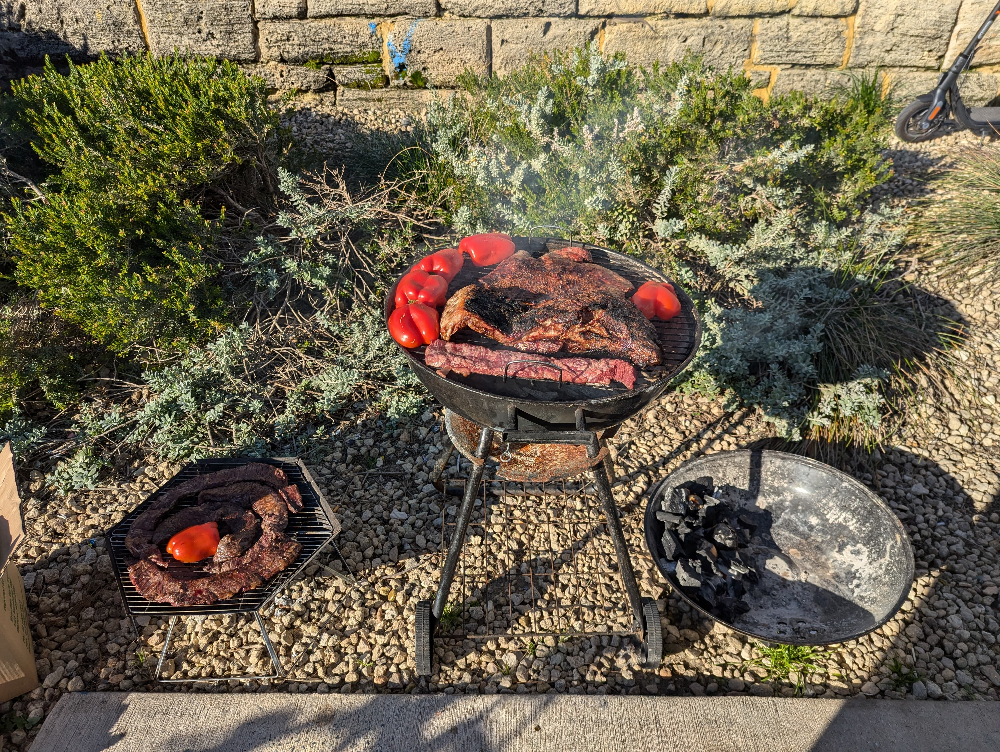

Description
For a good asado, we need three main things: GOOD meat and ENOUGH woodfire to prepare it and the most important, NICE PPL!
Ingredients
- Salt
- Pepper
- Wood
- Matambre
- Vacio
- Costilla
- Grab some old newspaper and small stickts to make enough flame to turn goodfire
- Once, the fire is good, grab a good knife, chopboard, salt, pepper and the meat
- Now is time to take small chank of fat that won't be necessary and salt pepper
- If we have achuras, this is the time for place them in a bowl with lemon juice
- Place the grill on the fire, wait 1,2 minutes and clean it with newspaper
- Grab a good spoon of charcol and place it all along the same side of the grill and place it on top
- Now carefully place the meat on the grill paying special attention on the fire, the tight parts will require low fire and stay on the grill longer than others cuts